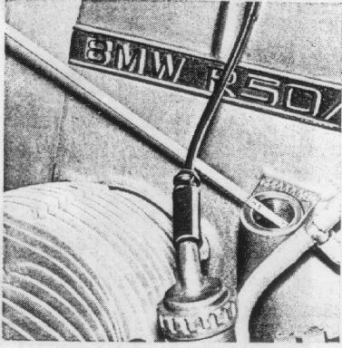

Fuel:
For perfect operation the Models R 60/5 and R 75/5 require
the use of a brand-name high test fuel with a minimum
octane rating of 99 (ROZ).
The Model R 50/5 can be operated with regular gasoline,
with a minimum octane rating of 92 (ROZ).
In the event you are forced to use gasoline with a lower octane rating,
you can prevent detonation by keeping the Engine RPM above 2500,
by shifting down earlier than usual and by turning the throttle very slowly.
Engine Oil:
We recommend checking the oil level regularly.
During the break-in it should be checked every 300 miles.
To top up always use the same brand and type,
fill only to the upper mark on the dip stick.
Too much oil in the Engine is useless and may cause damage.
The amount of oil between the two marks on the dip stick
amounts to 2.1 pints.
The oil level must never be below the lower mark.
Under no circumstances open the filler cap while the engine is running!
Push the dip stick in when checking, do not screw it in.
Figure 14
14

If you desire to switch to a different brand of oil,
do so only if you change the oil as well as the filter.
Our engines are designed to operate with all high grade,
brand name engine oils;
they do not require any additives.
For types of recommended oil see
Technical Data.
The same applies to transmission, rear wheel drive, and driveshaft housing.
The economy of operation of your motorcycle is influenced to a great extent by the way it is operated. High speeds, fast starts, and quick stops cause, besides greater fuel and oil consumption, more rapid wear of tires, brakes, and all power train parts.
Driving habits:
Never allow the engine RPM to be too low.
Always engage the next lower gear, especially when going uphill.
Downhill, the engine's braking effect may be increased even more
by shifting down to the next lower gear;
but in doing so the maximum RPM allowed must not be exceeded.
Never ride in neutral with the clutch depressed or, worse yet,
with the ignition switched off.
Principally, use both brakes simultaneously for all braking-operations
and brake softly -- which means increase the pull or the pressure
on the brake levers gradually so that the wheels will never lock,
if at all possible.
Always shift to neutral when stopping.
Do not let the engine idle in gear with the clutch disengaged.
Riding the clutch or letting it slip for long periods of time
causes local overheating and unnecessary wear.
Always turn off the ignition when stopping the engine and close
the petcocks when standing still for longer periods.
Travel Preparations
We recommend taking along the following spare parts when taking longer trips:
one air filter cartridge,
one set of spark plugs and light bulbs,
cylinderhead and cylinder base gasket,
some screws and nuts M6 + M8,
spring washers,
tying wire,
rubber bands (appr. 0.2" wide, cut off from motorcycle or auto tubes)
one pneumatic tube (always replace punctured tubes).
Should you own a motorcycle with considerable mileage,
we suggest you bring it to a BMW dealer to have it checked thoroughly.
Before going on a trip it is important to check the functioning and condition
of the light and ignition systems,
the cylinderheads, cylinders, pistons, clutch, brakes, control cables,
carburetor, wheels and tires.
If any repairs are necessary they should be accomplished before you start
on your trip.
If a trip is intended to take several months and also cover countries
with difficult travel conditions,
it is recommended to add the following to the already mentioned spare parts:
a set of ignition points,
a centrifugal spark advance,
and a set of control cables,
to be attached parallel to the cables in the cycle with adhesive tape.